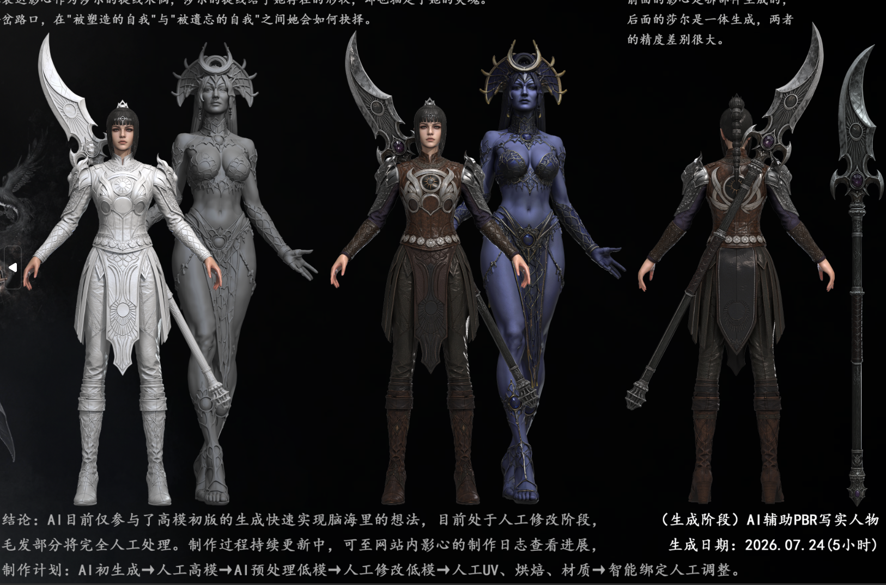
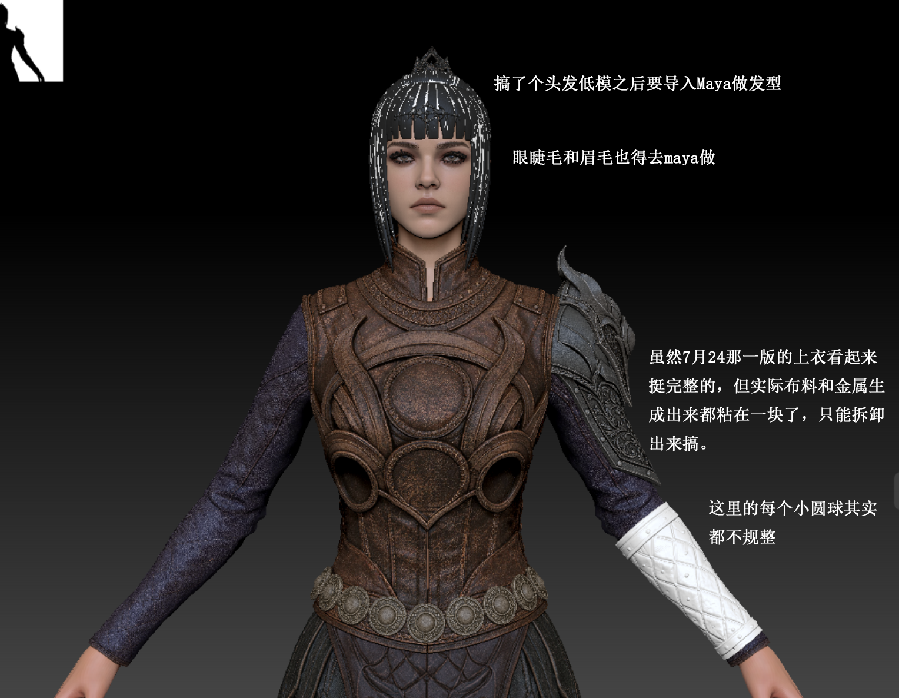

日期：2026年7月24日
项目：影心角色模型 — 个人创作
当前阶段：高模初版（High-Poly Draft v1）
一、制作动机
最近玩《博德之门3》很喜欢影心这个角色。
她身上有一种很矛盾的迷人感，半精灵血脉、暗夜女神的信徒，黑色幽默、以及她和信仰、记忆之间复杂的纠葛，让她成为整个游戏过程中我最想理解的人。
于是半夜从床上爬起来打开软件开始做影心的模型，想法总是在三更半夜的时候冒出来，一下子想了几个画面但是都是那种大场景构图，像是被莎尔束缚的掌中玩物，双重抉择下黑白影心走向不同的人生，前期作为莎尔信徒的影心被黑白影心反复拉扯。
二、当前进展
阶段：高模初版（High-Poly Draft v1）— 尚未精修

前期影心/白影心/黑影心/莎尔组合高模初版渲染图
这是第一版人物构图，因为考虑到拓扑和绑定，所以构图和姿势比较基础。——2026年7月24日

7月24日初版生成三视图（正/侧/背）
阶段：高模人工修改阶段（High-Poly Manual Refinement）— 正式开始
📅 2026年8月3日

ZBrush 高模人工修改阶段实机截图（2026年8月3日 早 08:38）
今天居然已经8月3日了，距离初版高模生成（7月24日）已经一周快两周了，今天早上才正式进入高模人工修改阶段。这段时间虽然没在改模型，但并不是停摆，这几天一直在搞提效工具、找参考图，把生产流程里反复消耗时间的环节自动化掉。
另一方面的现实原因是我的电脑配置没办法同时打开超大 ZBrush 文件和跑几个线程的东西，所以提效工具的开发和影心高模修改只能二选一，这段时间先做了工具。除此之外刚好这段时间深圳这边租的房子到期了，上周大部分时间都在搬家、寄快递、盘点剩下的预算、顺便帮房东带房客介绍房子...生活上的事占了不少精力。其实生活预算也没剩多少可自由支配的了，大三大四到毕业的这段时间，花了太多钱在两地长期租房、来回机票、酒店、换电脑配置买新设备上。杭州深圳两地当天往返的日子，刚下飞机就要坐地铁去学校/公司的日子，也算是在7月彻底结束了。
不过虽然手没在动模型，脑子里一直在想影心要改的部分，搬家、跑代码、寄快递、跟各种人沟通的间隙都会反复思考需要调整的地方。今天早上正式开工，先修几个小地方，下午再做其他事情。
三、后续计划
完整制作流程
从高模到最终导入游戏，计划走完整个 3D 角色制作管线：
| 步骤 | 内容 | 说明 |
|---|---|---|
| 1 | 高模精修 | 细化面部、服装、毛发等所有细节，打磨到成品级 |
| 2 | 低模拓扑 | 基于高模制作低面数版本，控制面数适配游戏引擎 |
| 3 | UV 拆展 | 合理分 UV，注意接缝隐藏和空间利用率 |
| 4 | 贴图烘焙 | 烘焙法线（Normal）、AO、曲率（Curvature）等贴图 |
| 5 | 材质贴图 | 制作 Diffuse / Normal / ORM 等贴图，还原皮甲、金属、肤色的质感 |
| 6 | 绑骨蒙皮 | 骨骼绑定 + 权重刷涂，确保变形自然 |
| 7 | 导入游戏 | 封装为 BG3 Mod 格式，测试实际效果 |
额外造型方向
哥特洛丽塔（Gothic Lolita）风格 — 筹备中
影心是暗夜女神莎尔的信徒，本身就有一种暗黑、神秘、又被信仰束缚的矛盾气质，感觉哥特洛丽塔的蕾丝、束腰、暗色系质感非常贴合她。黑色与深紫的配色、繁复的细节、压抑又华丽的剪裁，和影心的角色内核几乎是天然契合的。计划在主线版本完成后，额外制作一套哥特洛丽塔造型的服装资产作为变体。